MSE 125 — Applied Statistics
Monday, April 20, 2026
the model was 85% accurate
it caught zero of the patients who needed it
the problem
the data
the dumbest possible model beats random, passes QA, and saves zero lives
first we need a classifier
Framingham Heart Study: 4,240 patients, 10-year followup
outcome: TenYearCHD \(\in \{0, 1\}\)
CHD = 1 (positive class) · no CHD = 0 (negative class)
“positive” = the outcome we’re trying to detect, not the desirable one
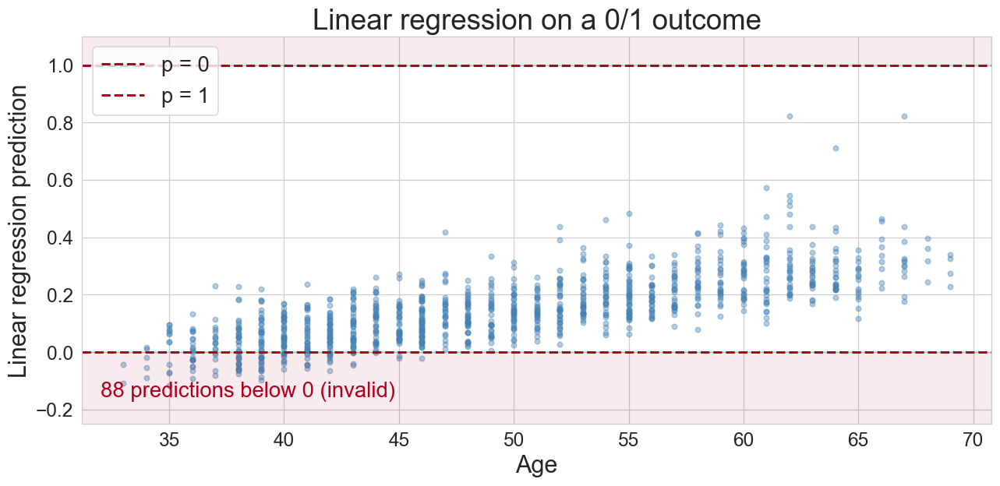
predictions below 0 and above 1 — not valid probabilities
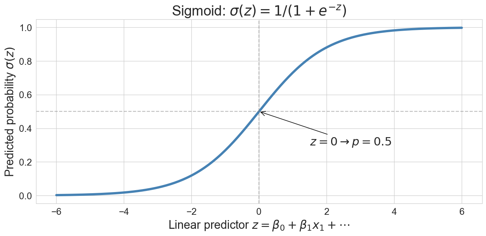
\[p = \sigma(z) = \frac{1}{1 + e^{-z}}, \quad z = \beta_0 + \beta_1 x_1 + \cdots + \beta_d x_d\]
| probability \(p\) | odds \(p/(1-p)\) | log-odds |
|---|---|---|
| 0.01 | 0.01 | \(-4.6\) |
| 0.20 | 0.25 | \(-1.4\) |
| 0.50 | 1.00 | \(\phantom{-}0.0\) |
| 0.80 | 4.00 | \(+1.4\) |
| 0.99 | 99.0 | \(+4.6\) |
log-odds range from \(-\infty\) to \(+\infty\) — perfect for a linear model
\[\log\frac{p}{1-p} = \beta_0 + \beta_1 x_1 + \cdots\]
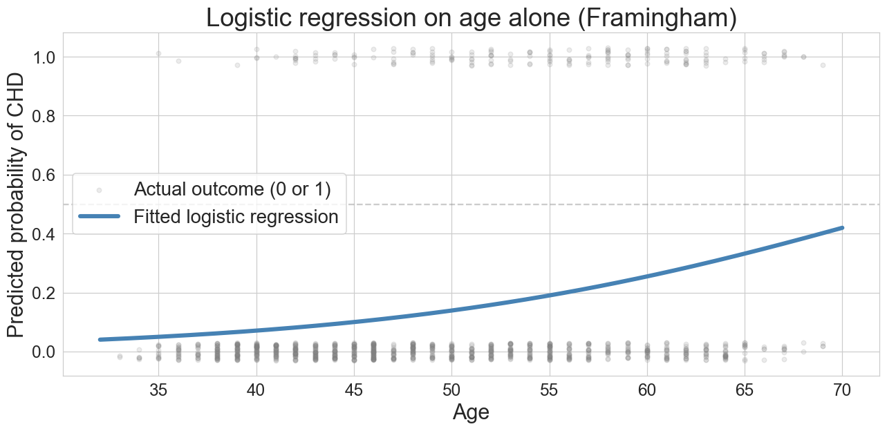
predicted risk climbs with age — we see the lower portion of the S-curve because the base rate is low
no closed-form solution — what loss do we minimize?
\[\ell(\beta) = -\big[ y \log(p) + (1-y) \log(1-p) \big]\]
penalizes confident wrong predictions especially hard
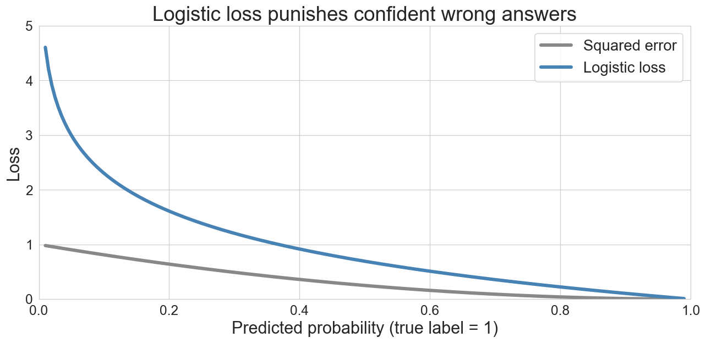
a 10% prediction for a true 1? squared error 0.81, logistic loss 2.3
\[\beta \leftarrow \beta - \eta \cdot \nabla L(\beta)\]
logistic loss is convex — one valley, one global minimum
(as long as the data isn’t perfectly separable — then the minimum runs off to infinity)
Q: will the loss curve drop smoothly, oscillate, or bounce around?
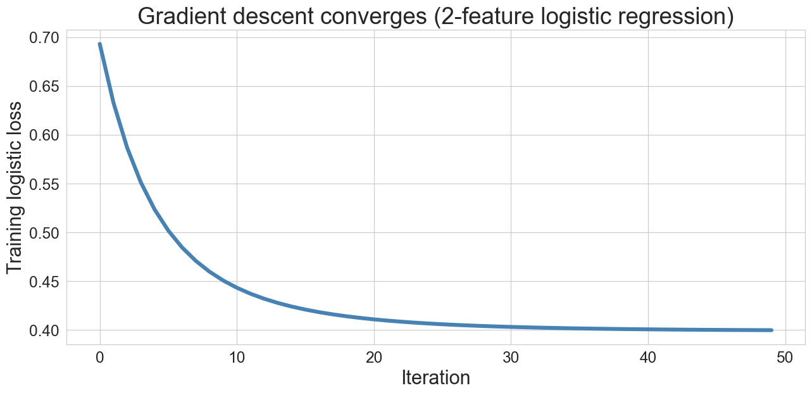
50 iterations on age + BMI logistic regression — loss drops fast, then settles
accuracy lies under class imbalance
Test accuracy: 0.85585.5% accurate — sounds great, right?
the “always predict no CHD” baseline:
Q: what accuracy does it get?
baseline accuracy = 0.848
our model accuracy = 0.855
improvement = 0.007our fancy classifier barely beats the null
Warning
accuracy measures how often you’re right overall
when one class dominates, being right about that class is easy and uninformative
1,096 test patients · 15% CHD base rate · threshold 0.5
| predicted no CHD | predicted CHD | |
|---|---|---|
| actually no CHD | ? | ? |
| actually CHD | ? | ? |
the model is very conservative — which cell dominates?
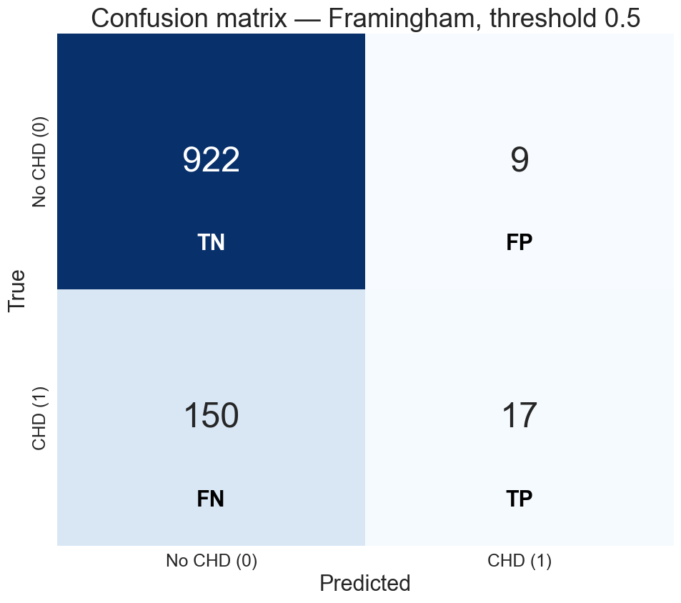
of 167 actual CHD cases, we caught 17
precision \[\frac{\text{TP}}{\text{TP} + \text{FP}}\]
“I flagged this patient — should I trust the flag?”
recall (sensitivity) \[\frac{\text{TP}}{\text{TP} + \text{FN}}\]
“of all the sick people, how many did we find?”
two metrics → two different stories
Precision: 0.65
→ Of patients flagged as CHD, 65% actually had it
Recall: 0.10
→ Of actual CHD patients (167 in test set), we caught 17accuracy hid a disaster — the model catches almost nobody
which type of error would you rather the model make?
for each: flag more, or flag fewer?
threshold choice is a cost-benefit call
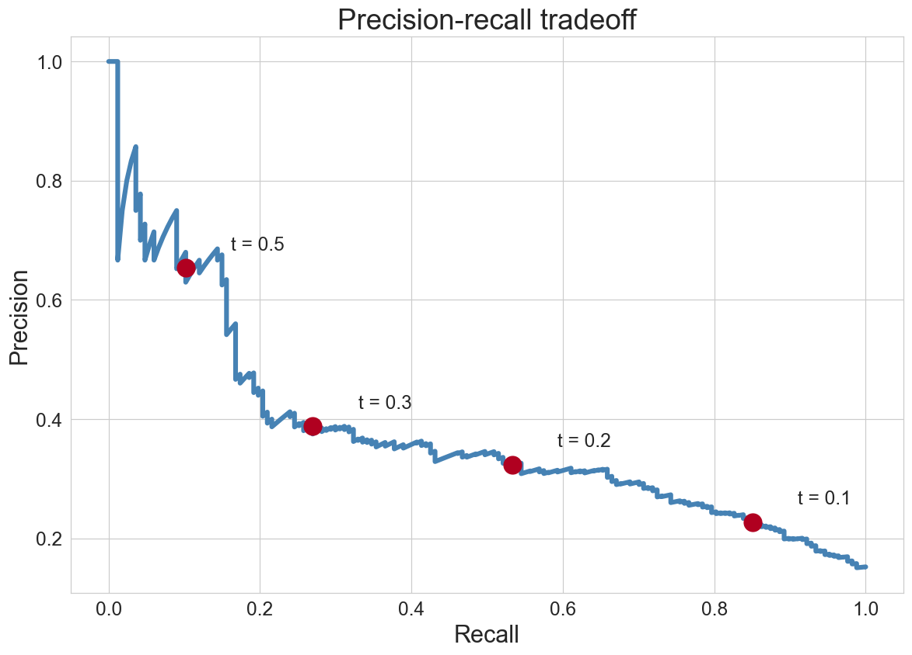
each annotated point is one threshold — as recall climbs, precision falls
no point dominates — you must choose
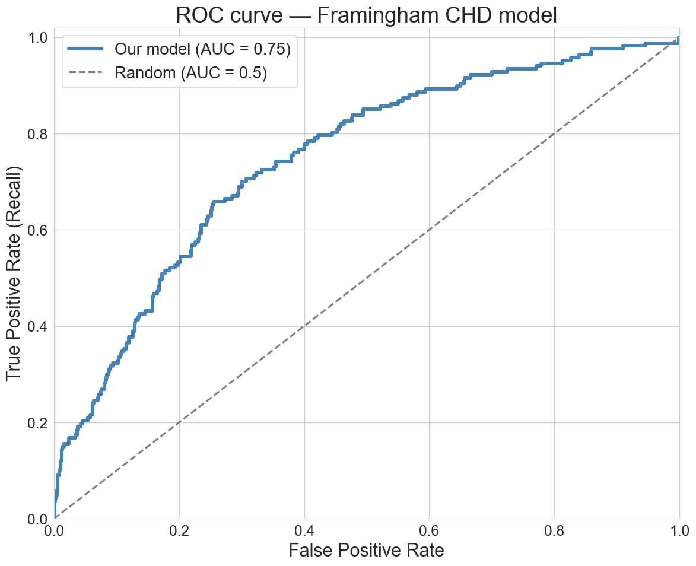
AUC ≈ 0.75 — concordance: pick one CHD and one non-CHD patient; the model ranks the CHD patient higher 75% of the time (ties count as half)
sounds great, right?
PR curve
axes: precision · recall
depends on base rate
operational view — most honest when the positive class is rare
ROC curve
axes: TPR · FPR
invariant to base rate
threshold-free summary (AUC) · compare models across datasets
same tradeoff, different invariances
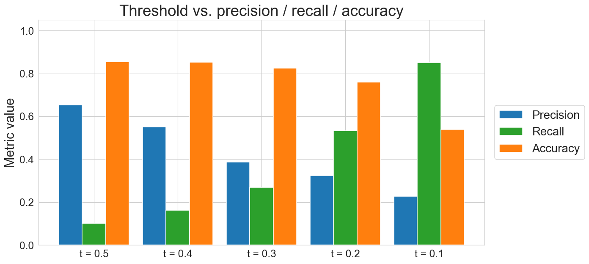
low threshold → catches more, but each flag is less reliable
aggregate metrics hide local failures
a vendor pitches a cancer screening test as 99% accurate:
cancer prevalence: 0.5%
a patient tests positive — P(cancer | positive)?
A. 99% · B. 67% · C. 33% · D. 1%
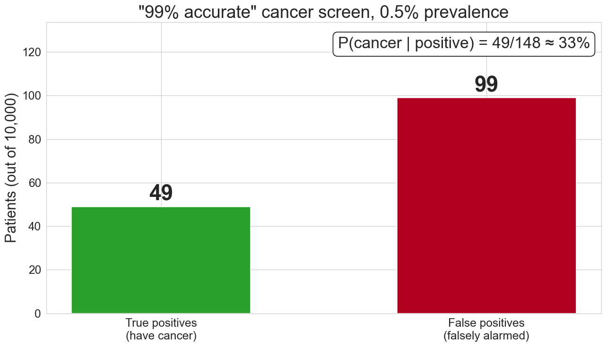
false positives swamp true positives when the condition is rare
aggregate AUC on our Framingham model is 0.75
is that good?
for which patients?
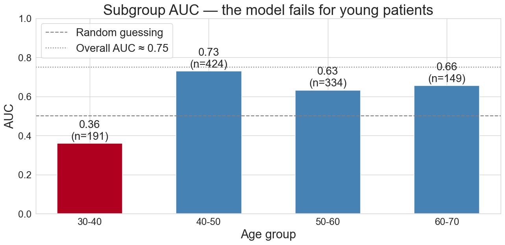
for patients under 40, AUC = 0.36 — below 0.5; inverting the ranking would do better
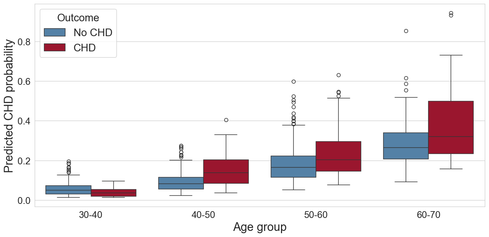
for older patients, red (CHD) sits above blue — for young patients, the two distributions overlap
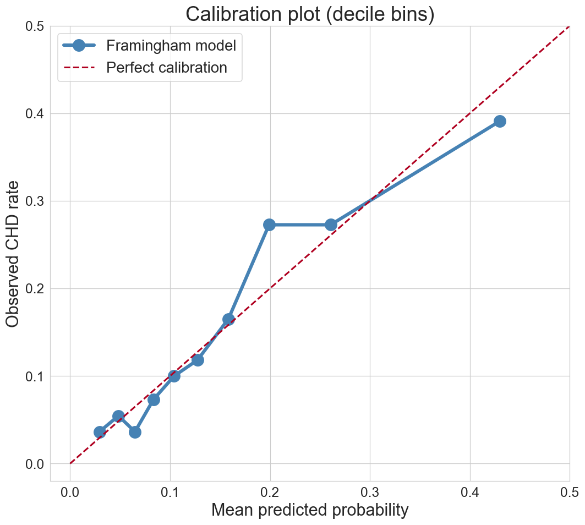
bin predictions into deciles → does “10% risk” mean 10% observed rate?
AUC measures ranking
does the model rank CHD patients above non-CHD?
calibration measures absolute probabilities
is “10% risk” really a 10% rate?
a model can have good AUC and bad calibration (or vice versa)
which matters depends on how you use the output
closing the loop
the question that opened the lecture
a hospital’s model is “85% accurate” — deploy it?
now you know what to ask: